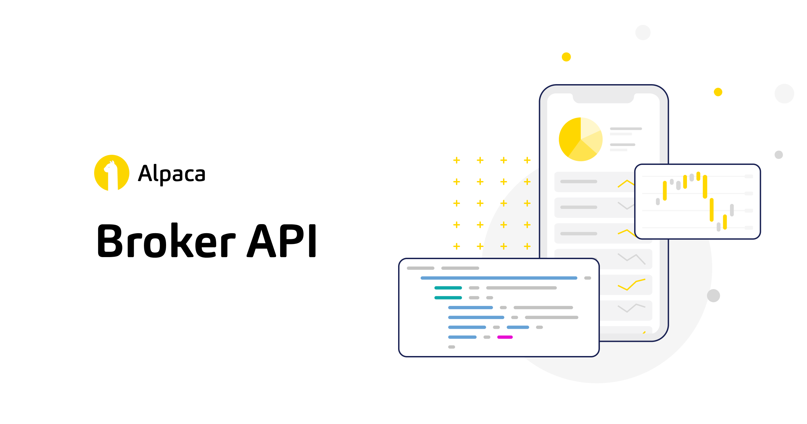
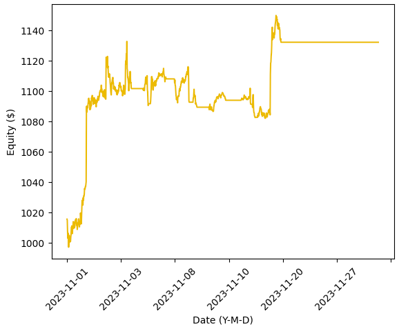

 Algorithmic Trading Robot
Having explored and flirted with the world of finance and investment and searching for a new programming challenge, I decided to embark on the construction of an autonomous Algorithmic Trading Robot. Below, you may find a summary of the whole project: the problem statement and context, how the analysis was performed, necessary and developed digital competencies and a sample of the results. For a more in depth description and viewing of the code snippets, see the dedicated github repository.
Architecture of the Project
Before starting the build the program, I layed out the schematics of how it should operate. The algorithm itself would be written in python and should perform a series of actions at a certain frequency in the following order: load the financial market's history, analyze the data, trigger a buy or sell signal based on some defined trading strategy and place an order at an online broker. I chose Alpaca for its ease of use and well documented API.
The second stage of the project would deal with the deployment of the program. While a cloud based solution or use of a Raspberry Pi were the ideal solutions, I decided to host the robot on my own laptop, a MacBook High Sierra 10.13.6. The risks and downsided of this solutions are discussed in the last section. To make this local solution work, I needed a bash script to continuously run in the background, tasked with detecting if the current time is within the open market time and, if this is the case, running the python script containing the trading algorithm. Additionally, since the goal is for this robot to be completely autonomous, the computer should be awake for the whole duration of the open market time and run the bash script without any user login or input from my side.
Lastly, I wanted to implement some additional features such as recording a history of my portfolio's performance, a backtesting function, sending an email with the results every month, a market study function, optimal parameters grid search function and more.
Project Build
The Algorithm, Python
- Choose a few assets from the market to follow, interval time at which to check and perform actions, trading strategy and values for the parameters of the strategy. These choices can be arbitrary or based upon an analysis, which is the method used and considered further below. The downside of choosing a large number of assets is computation time. Each asset may take between a few seconds to a minute to run through the algorithm. If the strategy is of high frequency or short interval time, the signals may be generated late if the amount of assets to follow is too high. Too few assets, on the contrary, will have a very low diversity and the associated risks for your portfolio.
- Define the buy and sell conditions based on the historical closing prices of an asset. This constitutes a trading strategy.
- Load the chosen assets' historical closing price for the chosen interval.
- Analyze the asset's data and generate sell or buy signals, if applicable, in accordance to a predefined strategy.
- Connect to the online broker through its API and place the trade orders when a signal is triggered.
Steps two to five are written as functions, making the algorithm highly customizable and easy to define new or modify strategies.
Local Hosting, Bash
There are two bash scripts for this project. Both are continuously run in LaunchDaemons and sudo permissions are given to some commands in the sudoers file.
Bash Script 1
-
Check current time and perform some action depending on it:
- if it is in the vecinity of market opening time, disable sleep,
- if it is in the vecinity of right after market closing time, enable sleep again,
- if it is within market time, run the python script containing the trading algorithm and
- if it is outside of market time, go to sleep to save computer power.
Bash Script 2
- Check current time. If it is within the vecinity of the computer automatic wake up time: retrieve the process identifier (PID) of the Bash Script 1 sleep process and kill it. This is important so Bash Script 1 activates, disables sleep and is ready for market opening. Otherwise it probably will miss the sleep disabling window, which is the few seconds the computer is awake before falling asleep again.
Additional Features, Python
- Backtesting function. Used to test a strategy on a specific asset with all the parameters of the algorithm as input arguments. Returns the performance of the strategy for the given parameter values.
-
Market study function. Uses the backtesting function to run through a large amount of assets belonging to 14 financial sectors to gain a better understanding of
the strategy's perfomance and sector influence. This function is used every two months to select the best performing assets from the best performing sectors. This
selection is then used as the list of assets to follow.
-
Parameter study function. Uses the backtesting function and the assets of the S&P500 to perform a grid search and store the best performing values for the parameters of the
strategy. In practice, this function was not put into place, because it did not prove to have significant changes over my educated estimation of the best parameters and,
more importantly, it took an incredibly long time to compute.
-
Portfolio and performance tracking functions. Periodically record and store the portfolio's value, which is then used to compute its historical performance, taking into account
cash flow corrections. Periodically send myself an email with the results.
Digital Competencies
Specifically for the computational aspect, this project required or taught me, among others, good knowledge of,
Python
- Pandas for data management and time series analysis,
- API interaction,
- yfinance and other financial modules for accessing the data of an asset
- datetime and time modules to check the time and set the script to sleep,
- a consistent, convential and clean coding style with good documentation for ease of read and maintenance,
- file management to save results and chosen assets,
- recursive functions and
- other functionalities, such as checking for a wifi connection, sending emails and logging the actions taken by the algorithm.
Bash
- Basics of Bash scripting, previously unfamiliar with,
- logging in a tmp file of the bash scripts actions,
- other commands like sleep, running a python script, checking time and date, if statements and interaction with the PID of a script.
Others
- Mac background running scripts, LaunchDaemons and LaunchAgents,
- sudoers file to grant permission without my input to certain commands in the bash scripts,
- terminal use,
- syncronization of multiple scripts interacting with each other and
- automatization of tasks and actions.
Results and Conclusions
 After putting everything in place, I started the forward testing, that is, turning the robot on and fully functioning in the real market but with paper (fake money) to measure the perfomance of the strategy on the real market, rather than its history, and catch any potential errors in the code or algorithm. On the right you may find the results for the month of November, 2023. A positive return is observed, but this is likely due to an overall rise in the market rather than the success of the strategy. After all, the implemented strategy is very basic and meant only to test the algorithm itself.
Below you may find two plots showing the 60 days backtesting results of two very simple moving average convergence divergence (MACD) strategies. There, you may observe that some sectors have positive results with very large standard deviations but that most sectors and assets, slightly above half of the analyzed assets, have negative results. Still, it would be interesting to compute the area under the curve and find the overall return. Interesting as well is the difference of performance between strategies.
Many more ideas for features and implementations were present, but I decided to close the project here and move on to new learning material and projects. Lastly, it is important to note the risks associated to hosting the robot on the local machine. Mainly, internet connection should be available at all times during open market time and the laptop has to be connected to a power source, otherwise it will not turn on. To solve the latter issue, a Raspberry Pi could be used, but even better would be to deploy the algorithm to the cloud.